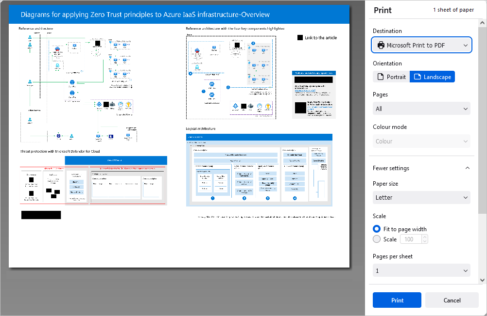

Preuzimanje i štampanje dijagrama
Preuzimanje
Možete preuzeti dijagram na hard disk svog računara,
- kliknite na karticu File na gornjoj alatnoj traci,
- izaberite opciju Download as,
- odaberite jedan od dostupnih formata u zavisnosti od potrebe: VSDX, PDF, PDF/A, JPG, PNG.
Čuvanje kopije
Možete sačuvati kopiju fajla na svom portalu,
- kliknite na karticu File na gornjoj alatnoj traci,
- izaberite opciju Save Copy as,
- odaberite jedan od dostupnih formata u zavisnosti od potrebe: VSDX, PDF, PDF/A, JPG, PNG.
- izaberite lokaciju fajla na portalu i pritisnite Save.
Štampanje
Da biste odštampali trenutni dijagram,
- kliknite na ikonicu Print u levom delu zaglavlja editora, ili
- koristite kombinaciju tastera Ctrl+P, ili
- kliknite na karticu File na gornjoj alatnoj traci i izaberite opciju Print.
Firefox pregledač omogućava štampanje bez prethodnog preuzimanja dokumenta kao .pdf fajla.

Podesite sledeće parametre u prozoru Print koji se otvara:
- Destination – izaberite odredište za štampanje fajla, npr. Save to PDF, Microsoft XPS Document Writer, Microsoft Print to PDF, Fax, itd.
- Pages – izaberite jednu od opcija za štampanje stranica: All, Current, Odd, Even ili Custom. U poslednjem slučaju, potrebno je ručno uneti brojeve stranica.
-
Colour mode – odaberite da li želite da fajl bude odštampan u Colour ili Black and white. Imajte u vidu da je ovo podešavanje dostupno kada je izabrana opcija Microsoft XPS Document Writer za Destination. Za opciju Fax u okviru Destination, režim boja je podrazumevano black and white.
Kliknite na natpis More settings da otvorite napredna podešavanja.
- Paper size – odaberite jednu od dostupnih veličina sa padajuće liste ili definišite prilagođenu veličinu.
- Scale – podesite razmeru pri štampanju; možete fit it to page width ili ručno podesiti skaliranje preko Scale polja i odgovarajućeg unosa.
- Pages per sheet – podesite broj stranica koje se štampaju na jednom listu, npr. dve, šest, devet, itd.
- Margins – definišite margine stranice. Možete izabrati default margine ili prilagođene u inčima. Za prilagođene margine, ručno unesite vrednosti za gornju, donju, levu i desnu marginu. Takođe možete odabrati opciju None da biste uklonili margine.
- Options – označite polje Print headers and footers da biste ih odštampali, ili uklonite oznaku da se ne štampaju.
- Print using the system dialogue – kliknite na ovaj natpis da otvorite sistemski dijalog za podešavanje procesa štampanja.
U desktop verziji za sada je dostupno samo podešavanje preko System Print Dialogue.